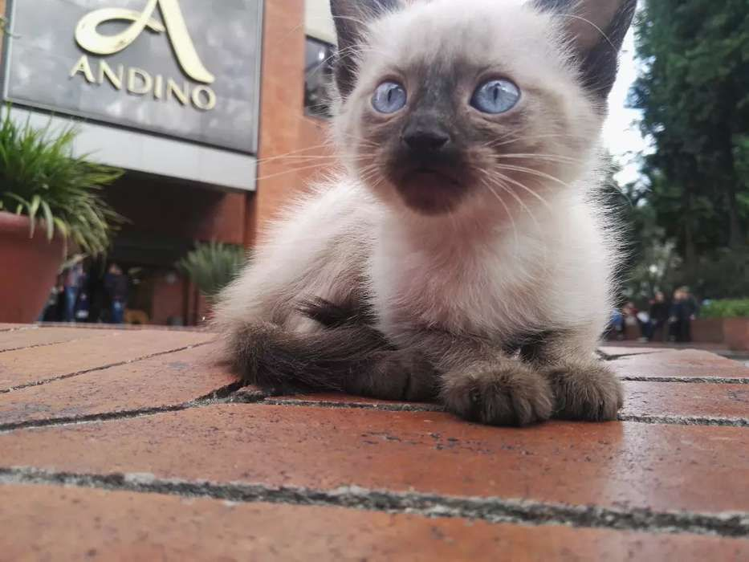
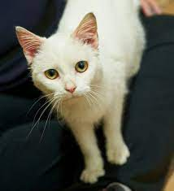

Gatos en Adopcion
¡Bienvenido/a a nuestra sección de adopción de gatos! En nuestra ONG, nos apasiona ayudar a los gatos en situación de abandono y maltrato a encontrar un hogar amoroso y seguro. Sabemos que los gatos son animales maravillosos, llenos de personalidad y amor, y nos esforzamos por asegurarnos de que todos los gatos que rescatamos reciban el cuidado y el amor que necesitan.
Aquí encontrarás una lista de los gatos disponibles para adopción. Todos ellos han recibido los cuidados necesarios, incluyendo atención veterinaria, alimentación adecuada, y mucho cariño por parte de nuestro equipo de voluntarios y profesionales. Todos nuestros gatos están en perfecto estado de salud y han sido evaluados en cuanto a su temperamento y personalidad para garantizar su compatibilidad con posibles adoptantes.
Adoptar un gato es una decisión importante, pero también es una de las más gratificantes que puedes tomar. Al darle un hogar a uno de nuestros gatos, no solo le estás dando una oportunidad de tener una vida mejor, sino que también estás enriqueciendo tu propia vida con la compañía y amor de un animal fiel y cariñoso. ¡Gracias por considerar la adopción de uno de nuestros gatos!
Nuestros Gatos en busqueda de Familia
 Ginger
Ginger
 Tommy
 Lucifer